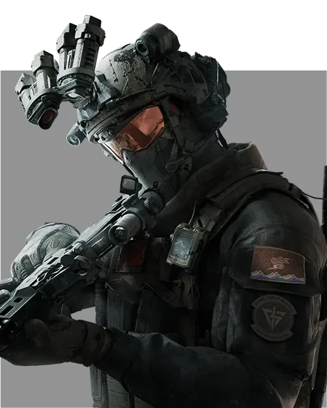
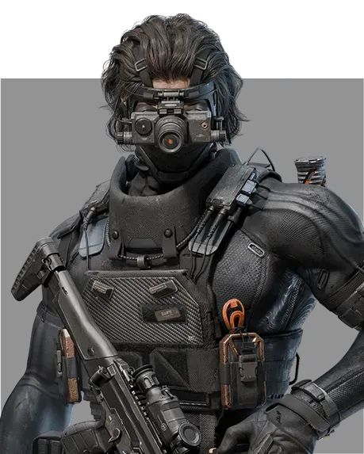
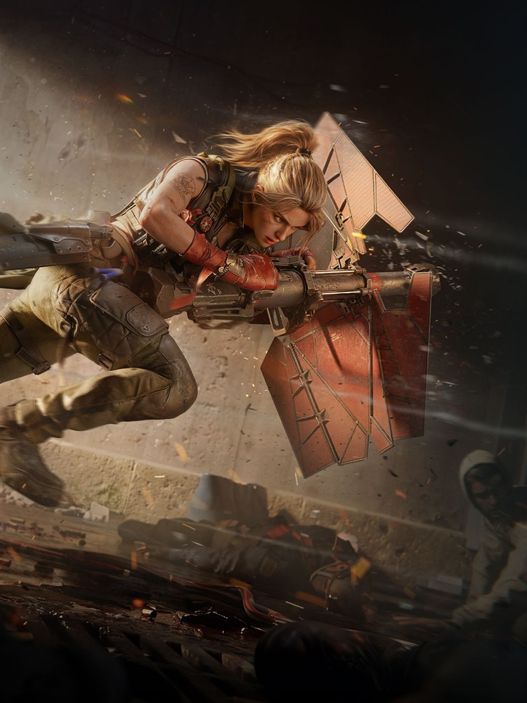
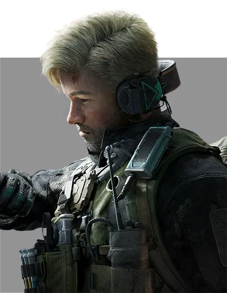
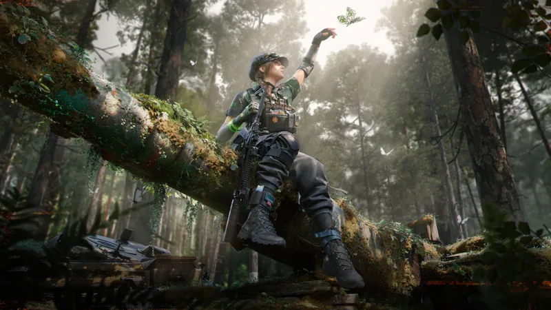
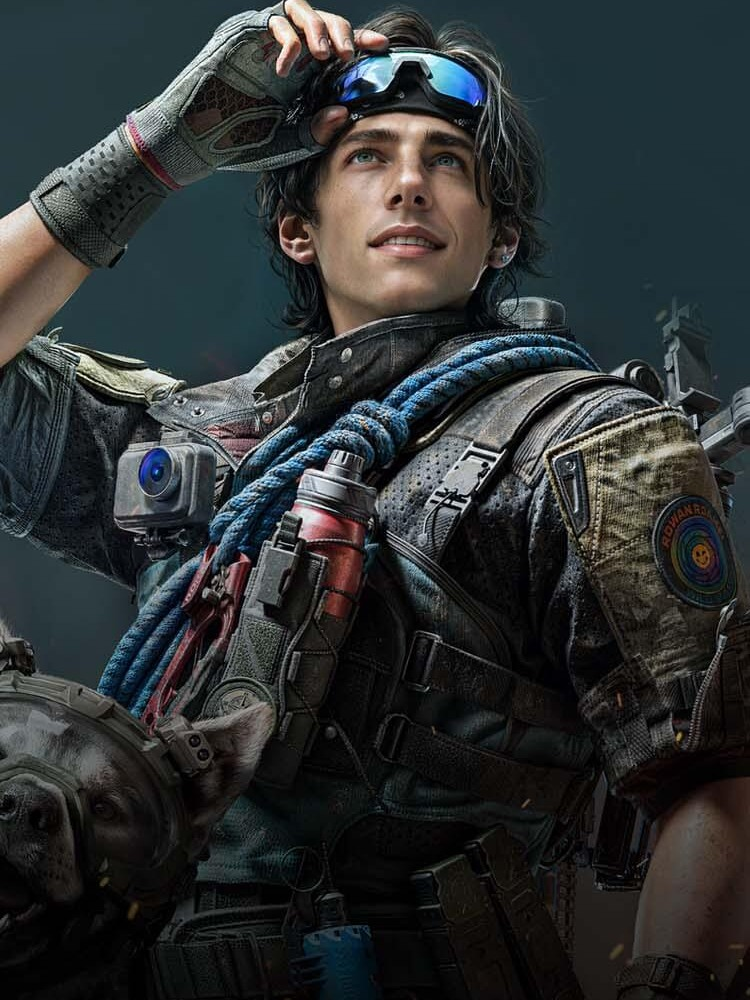
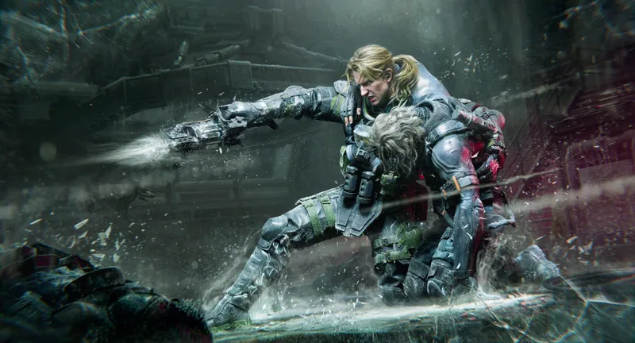
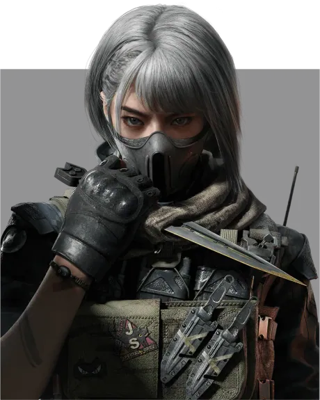
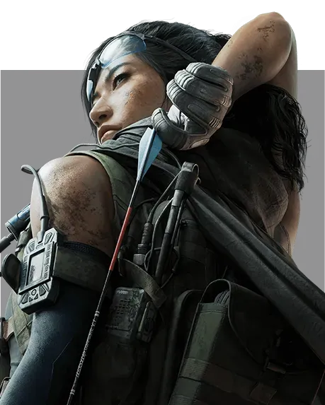
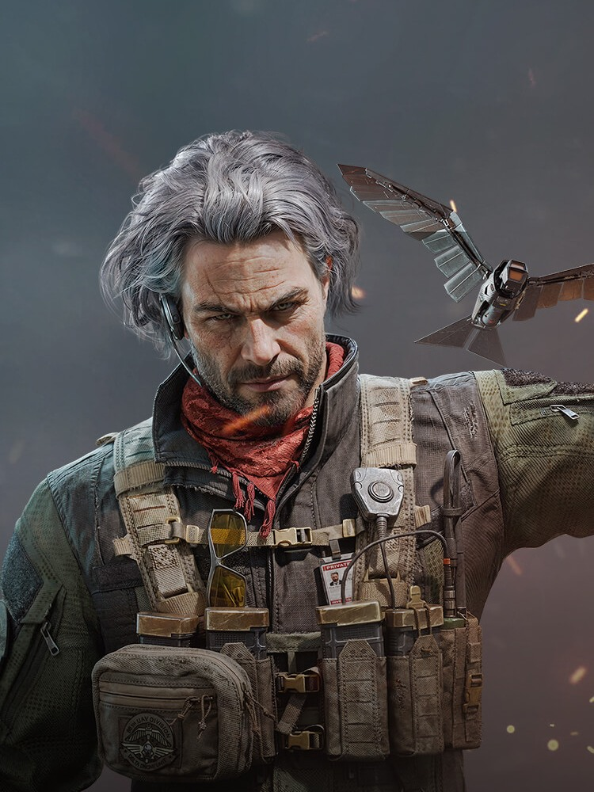

D-Wolf
Assault
Tăng tốc bằng exoskeleton, kết hợp súng phóng lựu ba nòng và trượt chiến thuật để áp sát.
Chọn một nhân vật để xem chức vụ, hồ sơ và toàn bộ bộ kỹ năng. Danh sách có thể lọc theo vai trò.
Assault
Tăng tốc bằng exoskeleton, kết hợp súng phóng lựu ba nòng và trượt chiến thuật để áp sát.

Assault
Dùng động cơ phản lực để lao nhanh theo nhiều hướng, mở lối áp sát mục tiêu.

Assault
Tiếp cận lặng lẽ, truy dấu và làm chậm đối thủ bằng các thiết bị gây nhiễu.

Assault
Phá xuyên vật cản để làm choáng đối thủ, né đòn và kéo về vị trí an toàn.

Assault
Xông lên bằng Ariete, giảm sát thương từ phía trước và hất ngã đối thủ; có thể tạo màn khói diện rộng.

Support
Hỗ trợ đội bằng súng y tế, drone tạo khói và khả năng hồi sinh đồng đội.

Support
Dùng khí độc và drone để tăng cường đồng đội, đồng thời làm suy yếu đối thủ.

Support
Điều khiển UAV cứu hộ và drone y tế để hồi sinh, hỗ trợ đồng đội.

Support
Phối hợp cùng chó nghiệp vụ Clover để tìm địch; súng dart hỗ trợ và gây áp lực lên đối thủ.

Engineer
Dùng drone âm thanh và bẫy để trinh sát, khống chế khu vực; giảm sát thương từ vụ nổ.

Engineer
Kết hợp tên lửa tách bom, vật cản bê tông và lựu đạn cháy để kiểm soát chiến trường.

Engineer
Chuyên xử lý bom mìn với khiên chống nổ, móc kéo và dây thép gai.

Engineer
Triển khai crawler, mìn khói và thiết bị tuần tra để giữ tuyến, cản bước đối phương.

Engineer
Dùng lựu đạn băng và thiết bị cryo để làm chậm, đóng băng mục tiêu.

Recon
Theo dõi tín hiệu đối thủ, làm mù bằng drone và vô hiệu hóa thiết bị bằng dao dữ liệu.

Recon
Dùng cung trinh sát để phát hiện, gây choáng và đánh dấu đối thủ.

Recon
Lần theo dấu chân, đặt camera do thám và điều khiển UAV có thể mang EMP.

Recon
Dùng sonar phát hiện đối thủ, jammer gây nhiễu và khả năng nghe xa trong Chiến Dịch.
Chọn một nhân vật trong danh sách để xem hồ sơ và kỹ năng.